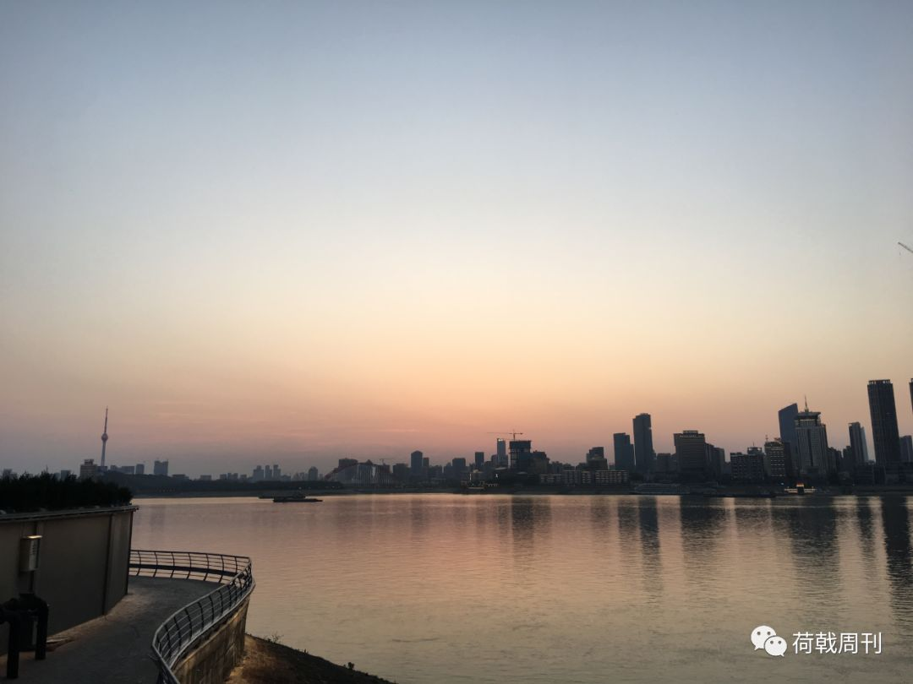
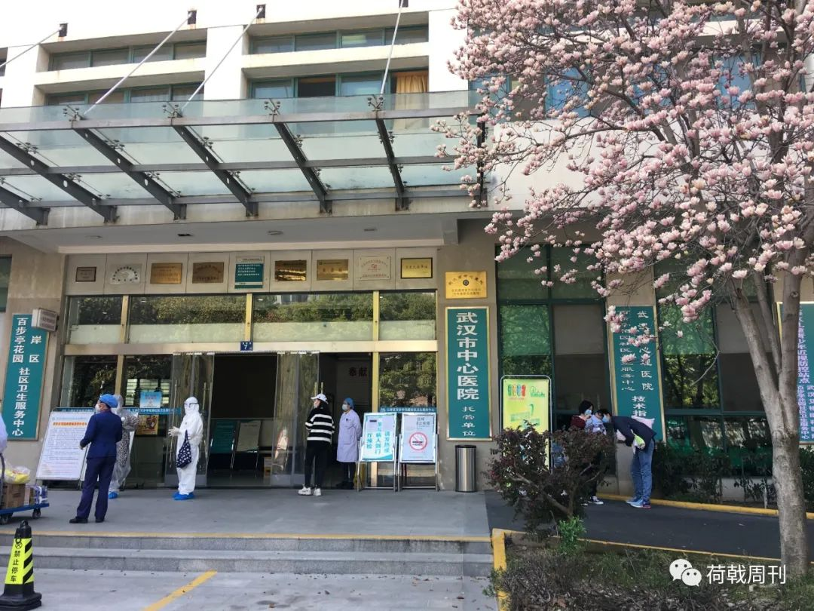

最新研究发现新冠病毒和穿山甲无直接关系，多地监狱爆发聚集性传染，以及其他 34 条疫情新闻
原文链接 备份链接 疫情发展 1.湖北卫健委：不允许核减已确诊病例。2月21日举行的湖北疫情防控新闻发布会上，湖北卫健委副主任涂远超表示，明确要求对已确诊的病例不允许核减，已核减的必须全部加回。此前，由于统计标准的一再变化，黄石、天门等多 …

武汉封城六十天：那些黑暗中的微光
以及低沉的呼喊
文字/拍摄：Marcel

3月21日，华南海鲜批发市场，工作人员还在进行消杀和清理，地上都是水渍，空气中也弥漫着消毒水的味道。三月的天气过于闷热，一位年轻的工人脱下了自己的上衣，光着膀子走出来。去年12月中旬，海鲜市场周围出现了不明肺炎病例，当时这里被认为是最早的疫情发源地。
3月19日，百步亭社区卫生服务中心，玉兰已经绽放，几对年轻的父母带孩子来打针。这家社区医院的托管单位是武汉市中心医院，也就是文亮李医生生前所在的地方，那里医护人员感染严重。百步亭集团大楼门口，洒水车驶过，播放着经典歌曲《兰花草》的曲调。1月18日，疫情爆发已经半个月，这里仍然按计划举行了“万家宴”，引起了外界的广泛争议。2月7日，李医生去世。

3月21日，江汉区的一家店铺大门紧闭，关上了锁，并用两块腌制的大块鱼头，挂在了里面。

3月19日，小区外面的道路被栅栏围住，无法通行。另一边，可以听见楼上的居民和围墙外面的工作人员聊天的声音，大概是在讨论如何灭火。1月23日，武汉封城，交通停止运行，距离现在已经过去了整整六十天。后来，小区实行严格的封禁管理。
3月20日，骑手小哥们聚在水果店的门口，等待着配送外卖。社区工作人员穿着白色防护服，统一购买居民所需要的生活物资。封城的日子里，他们保障着这座城市的基本运转。新闻上说，从21日开始，部分超市逐步限时对无疫情小区的个人购物开放。
小区的封禁有所松弛，每个家庭每次可以出入一个人。一个老人终于有了机会出来透气散步，他独自坐在路边的台阶上，听手里的收音机播放传统戏曲。老人坐了很久，不知道经历过什么。

3月21日晚上，武汉下起了大雨，伴随着震耳欲聋的雷电声。一对年轻男女在临江大道上骑着自行车，两人一直在争吵，而后传来了女子的哭喊声。连忙下楼问他们什么情况，男子没有直接说，只是解释俩人吵架了，她摔倒在地，自己想带她去医院。女子情绪还是很崩溃，拒绝了提议，骑上车子独自离去。
已经封城整整两个月，长期的压抑很容易导致心理问题。据说，现在复工复产已经提上了日程，但精神层面的纾解与恢复则需要更长久的时间。
长按二维码向我转账
谢谢
受苹果公司新规定影响，微信 iOS 版的赞赏功能被关闭，可通过二维码转账支持公众号。
原文链接 备份链接 疫情发展 1.湖北卫健委：不允许核减已确诊病例。2月21日举行的湖北疫情防控新闻发布会上，湖北卫健委副主任涂远超表示，明确要求对已确诊的病例不允许核减，已核减的必须全部加回。此前，由于统计标准的一再变化，黄石、天门等多 …
原文链接 备份链接 作者简介 余静，成骨不全患者，现居住于武汉,心理咨询师，湖北省婚姻家庭研究会生命关怀委员会副主任 2月11日凌晨，武汉市新冠肺炎疫情防控指挥部发出第12号通告：即日起对市内小区实行封闭管理，对新冠肺炎确诊患者和疑似患者 …
原文链接 备份链接 凤凰新闻客户端 凤凰网在人间工作室出品 从多伦多到武汉，从武汉到汝州，从随州到海口，从福清到泉州……本期的4个故事，与4段离家或回家的旅程相关。疫情当前，或长或短的归途变得曲折复杂。有人花了几十个小时从加拿大回到武汉， …
原文链接 备份链接 2020年1月23日凌晨2点，武汉市宣布自10时起交通封城，尽管很多人还在睡梦之中，在8个小时的窗口时间内，仍有很多人选择连夜出城。更多的人，则留了下来，有的人别无选择，有的人则担心自己无论去哪里都是潜在的传播者。一位 …
原文链接 备份链接 综合报道，据美国约翰斯·霍普金斯大学发布的实时统计数据显示，截至美国东部时间21日9时13分(北京时间21日21时13分)，全球新冠肺炎确诊病例累计达284566例，死亡病例达11868例。 其中，中国以外，意大利、西 …